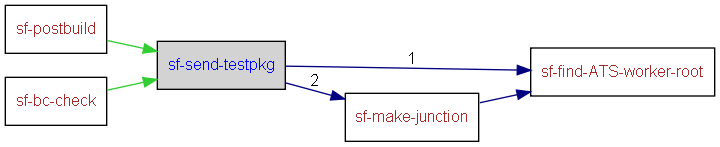

|
Helium API | ||||||
| prev next | frames no frames | ||||||
Location
D:\maintools\sf-config\common\build.test.xml:175:
Conditional execution
No conditions on target execution.
Sending testdrop to ATS3
| Name |
|---|
| perl |
| Name | Edit status |
|---|---|
| User editable properties | |
| Internal properties | |
| build.id | discouraged |
| build.log.dir | discouraged |

<target name="sf-send-testpkg" depends="sf-find-ATS-worker-root,sf-make-junction">
<mkdir dir="${sf.spec.test.workerroot}/${sf.spec.test.package.droppath}"/>
<echo message="Sending test package ${sf.spec.test.package.name} to ${sf.spec.test.host.name} path ${sf.spec.test.host.droppath}"/>
<exec executable="perl" dir="${sf.common.config.dir}/tools/ats" failonerror="false" output="${build.log.dir}/ATS_${build.id}_testdrop.log">
<arg value="ats3_testdrop.pl"/>
<arg value="--host=${sf.spec.test.host.name}"/>
<arg value="--username=${sf.spec.test.host.username}"/>
<arg value="--password=${sf.spec.test.host.password}"/>
<arg value="--local-test-pkg=${sf.spec.test.package.location}\${sf.spec.test.package.name}"/>
<arg value="--local-drop-path=${sf.spec.test.workerroot}\${sf.spec.test.package.droppath}"/>
<arg value="--host-drop-path=${sf.spec.test.host.droppath}"/>
</exec>
</target>
|
Helium API | ||||||
| prev next | frames no frames | ||||||